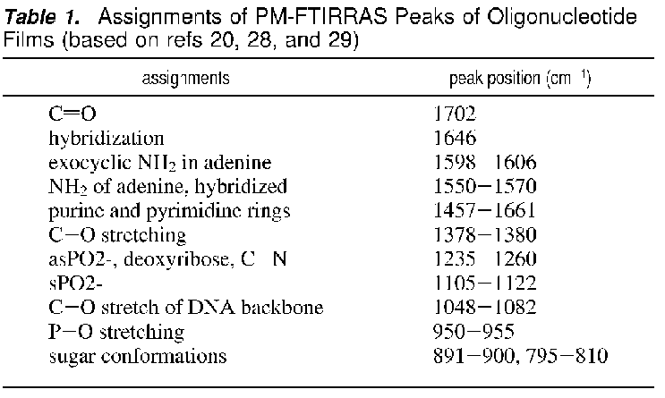

Au-Thiol Immobilization Protocol for ssDNA
Our results
Compare to NRL
results (Figure 4)

From a Clarkson
paper
Goal:
Establish reliable and reproducible method to attach
thiolated DNA to Au. Confirm DNA attachment using FTIR and AFM.
Determine utility of DTT (Reductacryl) activation. If necessary,
figure out how to block non-specific binding.
References:
- "Surface Structure and Coverage of an Oligonucleotide
Probe Tethered onto a Gold Substrate," E. Huang et al.,
Langmuir 17, 1215 (2001) (source of TE/NaCl buffer recipe).
- DNA
probes on chip surfaces studied by scanning force microscopy using
specific binding of colloidal gold
Samples produced:
- K-20 in TE: MgCl2 with Reductacryl, filtered.
- K-20 in TE: MgCl2 with Reductacryl, not filtered.
- K-20 no linker in TE:NaCl with Reductacryl, not
filtered.
- TE/MgCl2 buffer only.
- K-20 in TE:NaCl with Reductacryl, filtered.
- K-20 in TE:MgCl2 without Reductacryl.
Supplies needed:
- K-20 (5'-thiol-C6-TTA AGG TCT GGA CTG GCC TG-3' from IDT) in TE:MgCl2 1 microM
solution, 9x80 microL aliquots;
- K-20 no-linker 1 microM solution, 3x80 microL
aliquots;
- K-20 in TE:NaCL 1 microM solution, 3x80 microL
aliquots;
- Reductacryl, 4x75 microg;
- 6x 114-sized teflon o-rings (201 mm2 area);
- TE/MgCl2 buffer;
- 3x unpatterned Au/Cr glass slides;
- 3x Piranha-cleaned top glass plates;
- 4 -114 sized teflon o-rings;
- 1 small syringe;
- 3x 0.2 micron cellulose syringe filter;
- parafilm;
- 3x hypodermic needle.
Procedure:
- Mark o-ring positions on glass slide with diamond scribe
and label them.
- Piranha-clean top glass (3 mins each), rinse thoroughly
in DI water (5 mins) and blow-dry. Sonicate teflon
o-rings in acetone and IPA, rinse in water and blow-dry.
Move DNA aliquots from freezer to refrigerator.
- Measure 4 units of 75 microg each of Reductacryl and place one
unit in the bottom of each of four microfuge tubes (see calculation.) Label two tubes "K20 MgCl2,"
one "K20 NaCl" and one "K-20 no-linker."
- "Descum" three Au/Cr/glass slides and the three top plates using
oxygen and argon plasmas in the RIE with recipe hipress2.prc. Move
DNA aliquots from freezer to bench.
- While the RIE is pumping down, vortex and spin-down
DNA-containing microfuge tubes before dispensing. Add
240 microL (3x 80 microL aliquots) to each of the four
tubes. Rock for 15 minutes.
- Place the clean Au slides in the test jig and assemble the teflon
gaskets and glass plates on top. Dispense 240 microL of TE/MgCl2
buffer into cell No. 4.
- Vortex and spin-down DNA-containing microfuge tubes before
dispensing. At end of 15 minutes, dispense solutions cell No. 2
(K-20 unfiltered), cell No. 3 (K-20 no linker unfiltered) and cell
No. 6 (K-20 no Reductacryl) into their compartments. Withdraw the
solution A using a syringe and dispense through a 0.2 micron
cellulose syringe filter and hypodermic needle into cell No. 1.
Repeat with cell No. 5.
- Seal all compartments with Parafilm. Let sit overnight
in a darkened, N2-backfilled cabinet.
- Remove the parafilm, top glass and gaskets. Soak the top glass
and gaskets in ddH2O. Wash the slides twice in TE:MgCl2 buffer for
10 minutes and blow dry.
; for K20
(/ 43.87e-9 439e-6)
9.9932e-05 ; 43.87 nmol in 439 microL gives 100 microM
; Take 10 microL of 100 microM solution
(* (/ 10e-6 439.0e-6) 43.87e-9)
9.9932e-10 ; contains 1 nmol
; Adding 10 microL of 100 microM to 90 microL buffer produces 10 microM solution
(/ 9.9932e-10 100e-6)
9.9932e-06 ; 10 microM concentration of 100 microL of solution
; Take 8 microL of 10 microM solution
(* (/ 8.0e-6 100e-6) (/ 10e-6 439.0e-6) 43.87e-9)
7.9945e-11 ; 8 microL of 10 microM solution contains 80 pmol
(* 8e-6 10e-6)
8.0000e-11
; Adding 8 microL of 10 microM to 72 microL gives 1 microM
(/ 7.9945e-11 80e-6)
9.9931e-07
; From IDT
;o Resuspend oligo plus resin in TE (or similar buffer which is
;neutral or slightly alkaline such as pH 7.5).
;o Use a ratio of 1 mg oligo with 50 mg resin to ensure complete reduction.
;o Stir or agitate at room temperature for 15 minutes.
;o Remove ReductacrylTM by filtration (e.g., pass through a syringe filter)
;o Activated oligo can be directly injected into the coupling reaction
;or can be stored for brief periods of time before use.
; What is the weight of 80 pmol DNA?
; According to IDT website, K-20 No Linker has MW of 6164 g/mole
(* 1e9 (* 80e-12 6164))
493.1200 ; weight in ng of 80 pmol K-20 NL DNA
(* 1e-3 (* 50 493.1200))
24.6560 ; microg of Reductacryl
; for K-20 no linker
(/ 19.19e-9 192e-6)
9.9948e-05 ; 19.19 nmol in 192 microL buffer gives 100 microM
; Take 10 microL of 100 microM solution
(* (/ 10e-6 192e-6) 19.19e-9)
9.9948e-10 ; 10 microL will contain 1 nmol of oligo
; Adding 10 microL of 100 microM to 90 microL buffer produces 100
; microL of 10 microM solution.
; Subsequently adding 8 microL of 10 microM solution to 72 microL of
; buffer produces 80 microL of 1 microM solution.
; Consider 200 microL of 1 microM K-20.
(* 200e-6 1e-6)
2.0000e-10 ; 200 pmol
; calculate amount of Reductacryl needed at 50x excess by weight
(* 50 (* 2.0000e-10 6164))
6.1640e-05 ; 62 microg
Back to protocol list.


alison@exerciseforthereader.org
(Alison Chaiken)
WSRCC Home Page || Up One
Level
..